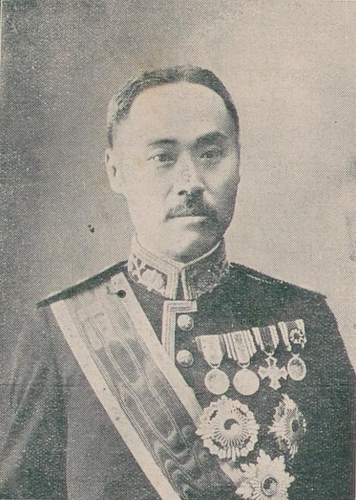
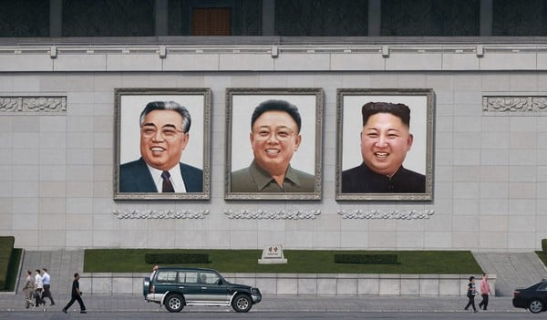

이완용
을사오적의 핵심인물 일제로 부터 후작 작위와 막대한 재산을 받아 호의호식
천수를 누리다 사망, 생전 어떠한 처벌도 받지 않음
이디 아민
1970년대 우간다의 독재자, 수십만명을 학살하고 인권을 유린함
실각한 뒤 사우디로 망명 후 사우디 왕실에서 호화생활을 누리다 사망
레오폴드 2세
벨기에의 국왕, 콩고 노예들의 손목을 자르고 천만명 이상을 학살함
생전 막대한 부를 축적해 호화롭게 살고 평온하게 사망
요제프 멩겔레
나치 친위대 의사, 아우슈비츠에서 생체 실험을 자행해 죽음의 천사로 불림
종전 후 남미로 도주해 잘 살다가 브라질 해변에서 사망

북돼지 3부자
북한 국민들의 인권을 유린하고 탄압하고
3대 세습이라는 독재를 당당하게 하고 있지만
카르마는 커녕 평생을 행복하게 살다가 뒤짐
인과응보?
다 개소리가 맞음 ㅋㅋ
댓글
수집 당시 댓글 417개
· 천년군주 · 11.27 19:04:17
· ㅇㅇ · 11.27 19:05:33
· 천년군주 · 11.27 19:05:37
· ㅇㅇ · 11.27 19:06:21
· ㅇㅇ · 11.27 19:07:48
· 천년군주 · 11.27 19:08:13
· ㅇㅇ · 11.27 19:09:13
· ㅇㅇ · 11.27 19:09:56
· 천년군주 · 11.27 19:10:17
· ㅇㅇ · 11.27 19:10:53
· ㅇㅇ · 11.27 19:12:02
· ㅇㅇ · 11.27 19:12:29
· 천년군주 · 11.27 19:13:45
· ㅇㅇ · 11.27 19:14:42
· 천년군주 · 11.27 19:16:09
· ㅇㅇ · 11.27 19:16:45
· 천년군주 · 11.27 19:16:55
· ㅇㅇ · 11.27 19:17:40
· ㅇㅇ · 11.27 19:19:10
· 천년군주 · 11.27 19:19:25
· ㅇㅇ · 11.27 19:21:14
· 천년군주 · 11.27 19:22:08
· ㅇㅇ · 11.27 19:22:15
· ㅇㅇ · 11.27 19:23:19
· ㅇㅇ · 11.27 19:29:46
· 천년군주 · 11.27 19:31:01
· ㅇㅇ · 11.27 19:33:46
· 천년군주 · 11.27 19:35:13
· ㅇㅇ · 11.27 19:36:49
· ㅇㅇ · 11.27 19:37:13
· 천년군주 · 11.27 19:40:21
· ㅇㅇ · 11.27 19:53:35
ㅇㅇ · 11.27 18:11:41
ㅇㅇ · 11.27 18:13:39
· ㅇㅇ · 11.27 18:19:55
ㅇㅇ · 11.27 18:16:18
Sepulveda · 11.27 18:16:24
삭제됨 · 11.27 18:18:36
· ㅇㅇ · 11.27 18:41:30
ㅇㅇ · 11.27 18:25:02
ㅇㅇ · 11.27 18:25:08
· ㅇㅇ · 11.27 18:36:15
ㅇㅇ · 11.27 18:28:37
ㅇㅇ · 11.27 18:28:48
· ㅇㅇ · 11.27 18:30:36
ㅇㅇ · 11.27 18:36:10
· ㅇㅇ · 11.27 18:49:49
· ㅇㅇ · 11.27 19:14:56
ㅇㅇ · 11.27 18:42:08
ㅇㅇ · 11.27 18:46:28
ㅇㅇ · 11.27 18:46:47
· ㅇㅇ · 11.27 18:49:11
1588 · 11.27 18:51:18
ㅇㅇ · 11.27 18:57:18
처음고 · 11.27 19:03:06
· ㅇㅇ · 11.27 19:23:02
· 처음고 · 11.27 19:29:10
· 처음고 · 11.27 19:29:15
· ㅇㅇ · 11.27 19:31:46
· 처음고 · 11.27 19:52:46
· 처음고 · 11.27 19:53:37
· 처음고 · 11.27 19:54:28
· 처음고 · 11.27 19:54:50
· ㅇㅇ · 11.27 19:59:01
· 처음고 · 11.27 20:00:12
· ㅇㅇ · 11.27 20:03:09
· 처음고 · 11.27 20:04:35
ㅇㅇ · 11.27 19:05:19
ㅇㅇ · 11.27 19:05:44
ㅇㅇ · 11.27 19:07:12
ㅇㅇ · 11.27 19:08:09
ㅇㅇ · 11.27 19:13:18
ㅇㅇ · 11.27 19:14:25
ㅇㅇ · 11.27 19:14:33
어어
밀지마라
ㅇㅇ · 11.27 19:16:22
ㅇㅇ · 11.27 19:17:28
ㅇㅇ · 11.27 19:20:03
· ㅇㅇ · 11.27 19:31:10
ㅇㅇ · 11.27 19:22:22
ㅇㅇ · 11.27 19:23:28
ㅇㅇ · 11.27 19:25:17
ㅇㅇ · 11.27 19:28:42
ㅇㅇ · 11.27 19:35:41
ㅇㅇ · 11.27 19:36:26
ㅇㅇ · 11.27 19:36:29
· ㅇㅇ · 11.27 20:28:12
ㅇㅇ · 11.27 19:39:10
ㅇㅇ · 11.27 19:44:06
· ㅇㅇ · 11.27 20:45:40
ㅇㅇ · 11.27 19:46:55
ㅇㅇ · 11.27 19:51:51
ㅇㅇ · 11.27 19:55:18
· ㅇㅇ · 11.27 19:55:36
· ㅇㅇ · 11.27 19:57:03
ㅇㅇ · 11.27 19:57:55
· ㅇㅇ · 11.27 20:00:00
ㅇㅇ · 11.27 20:01:11
ㅇㅇ · 11.27 20:08:14
· ㅇㅇ · 11.27 20:26:51
ㅇㅇ · 11.27 20:15:38
ㅇㅇ · 11.27 17:45:17
· ㅇㅇ · 11.27 17:46:48
· ㅇㅇ · 11.27 17:59:46
ㅇㅇ · 11.27 17:45:39
ㅇㅇ · 11.27 17:46:17
ㅇㅇ · 11.27 17:46:48
ㅇㅇ · 11.27 17:47:22
· ㅇㅇ · 11.27 17:48:45
· ㅇㅇ · 11.27 17:49:42
ㅇㅇ · 11.27 17:47:29
ㅇㅇ · 11.27 17:48:30
· ㅇㅇ · 11.27 17:49:53
· ㅇㅇ · 11.27 17:52:26
ㅇㅇ · 11.27 17:51:31
· ㅇㅇ · 11.27 17:53:08
ㅇㅇ · 11.27 17:52:26
ㅇㅇ · 11.27 17:52:48
캐피탈리즘 · 11.27 17:53:57
ㅇㅇ · 11.27 17:54:02
· ㅇㅇ · 11.27 17:56:12
· ㅇㅇ · 11.27 17:57:57
· ㅇㅇ · 11.27 18:13:54
ㅇㅇ · 11.27 17:55:09
ㅇㅇ · 11.27 17:55:50
ㅇㅇ · 11.27 17:58:02
· ㅇㅇ · 11.27 17:58:11
· ㅇㅇ · 11.27 18:00:40
ㅇㅇ · 11.27 17:58:03
ㅇㅇ · 11.27 17:58:04
ㅇㅇ · 11.27 17:58:47
대구박응식36냥이 · 11.27 17:58:49
· ㅇㅇ · 11.27 18:02:25
· ㅇㅇ · 11.27 18:03:24
ㅇㅇ · 11.27 18:00:34
히이잉 · 11.27 18:01:15
ㅇㅇ · 11.27 18:03:10
천년군주 · 11.27 18:05:03
· ㅇㅇ · 11.27 18:05:29
· 천년군주 · 11.27 18:05:54
· 천년군주 · 11.27 18:06:39
· ㅇㅇ · 11.27 18:06:56
· ㅇㅇ · 11.27 18:07:17
· 천년군주 · 11.27 18:07:59
· ㅇㅇ · 11.27 18:08:48
· 천년군주 · 11.27 18:09:26
· ㅇㅇ · 11.27 18:12:17
· ㅇㅇ · 11.27 18:14:02
· 천년군주 · 11.27 18:16:04
· ㅇㅇ · 11.27 18:17:26
· ㅇㅇ · 11.27 18:18:15
· ㅇㅇ · 11.27 18:19:19
· ㅇㅇ · 11.27 18:33:33
ㅇㅇ · 11.27 18:05:04
ㅇㅇ · 11.27 18:07:31
ㅇㅇ · 11.27 18:08:34
ㅇㅇ · 11.27 18:08:49
ㅇㅇ · 11.27 18:08:57
· ㅇㅇ · 11.27 18:10:40
· 천년군주 · 11.27 18:13:23
· 천년군주 · 11.27 18:15:33
· ㅇㅇ · 11.27 18:16:58
· 천년군주 · 11.27 18:18:24
· 천년군주 · 11.27 18:19:47
· ㅇㅇ · 11.27 18:20:28
· ㅇㅇ · 11.27 18:22:01
· ㅇㅇ · 11.27 18:24:02
· ㅇㅇ · 11.27 18:24:49
· 천년군주 · 11.27 18:24:59
· ㅇㅇ · 11.27 18:25:58
· 천년군주 · 11.27 18:26:55
· ㅇㅇ · 11.27 18:29:05
· 천년군주 · 11.27 18:29:12
· ㅇㅇ · 11.27 18:30:36
· ㅇㅇ · 11.27 18:31:39
· 천년군주 · 11.27 18:33:59
· 천년군주 · 11.27 18:35:33
· ㅇㅇ · 11.27 18:36:24
· 천년군주 · 11.27 18:37:21
· ㅇㅇ · 11.27 18:37:25
· ㅇㅇ · 11.27 18:38:17
· ㅇㅇ · 11.27 18:38:22
· ㅇㅇ · 11.27 18:39:11
· 천년군주 · 11.27 18:39:42
· ㅇㅇ · 11.27 18:40:57
· 천년군주 · 11.27 18:40:59
· ㅇㅇ · 11.27 18:42:54
· ㅇㅇ · 11.27 18:45:10
· 천년군주 · 11.27 18:47:19
· ㅇㅇ · 11.27 18:48:10
· 천년군주 · 11.27 18:48:55
· ㅇㅇ · 11.27 18:50:59
· 천년군주 · 11.27 18:51:54
· ㅇㅇ · 11.27 18:52:23
· ㅇㅇ · 11.27 18:52:39
· ㅇㅇ · 11.27 18:53:20
· ㅇㅇ · 11.27 18:54:14
· ㅇㅇ · 11.27 18:59:04
· 천년군주 · 11.27 19:00:48
· ㅇㅇ · 11.27 19:02:11
· ㅇㅇ · 11.27 19:03:31
ㅇㅇ · 11.27 17:27:20
· ㅇㅇ · 11.27 17:28:11
· ㅇㅇ · 11.27 17:30:33
ㅇㅇ · 11.27 17:27:24
ㅇㅇ · 11.27 17:27:33
ㅇㅇ · 11.27 17:28:01
· ㅇㅇ · 11.27 17:56:30
ㅇㅇ · 11.27 17:28:20
ㅇㅇ · 11.27 17:28:27
ㅇㅇ · 11.27 17:28:33
ㅇㅇ · 11.27 17:28:53
· ㅇㅇ · 11.27 17:30:08
ㅇㅇ · 11.27 17:29:06
· ㅇㅇ · 11.27 17:30:11
· ㅇㅇ · 11.27 17:33:33
· ㅇㅇ · 11.27 17:37:18
· ㅇㅇ · 11.27 17:41:30
ㅇㅇ · 11.27 17:29:10
ㅇㅇ · 11.27 17:29:21
ㅇㅇ · 11.27 17:29:47
ㅇㅇ · 11.27 17:29:53
ㅇㅇ · 11.27 17:30:00
· ㅇㅇ · 11.27 17:31:05
Adriel · 11.27 17:30:02
ㅇㅇ · 11.27 17:30:23
ㅇㅇ · 11.27 17:30:41
· ㅇㅇ · 11.27 17:33:45
ㅇㅇ · 11.27 17:30:55
· ㅇㅇ · 11.27 17:38:17
ㅇㅇ · 11.27 17:31:15
· ㅇㅇ · 11.27 17:32:21
· ㅇㅇ · 11.27 17:34:42
· ㅇㅇ · 11.27 17:41:21
· ㅇㅇ · 11.27 17:42:44
· ㅇㅇ · 11.27 17:43:03
DC전사쿠루미쨩 · 11.27 17:31:24
ㅇㅇ · 11.27 17:32:05
Cyclic · 11.27 17:32:38
ㅇㅇ · 11.27 17:33:13
· ㅇㅇ · 11.27 17:33:52
· HANSATOY · 11.27 17:33:57
· ㅇㅇ · 11.27 17:34:42
· ㅇㅇ · 11.27 17:34:56
· ㅇㅇ · 11.27 17:35:15
· ㅇㅇ · 11.27 17:36:18
· msnr · 11.27 17:36:36
· ㅇㅇ · 11.27 17:44:23
· ㅇㅇ · 11.27 17:52:24
· ㅇㅇ · 11.27 18:04:39
ㅇㅇ · 11.27 17:34:54
ㅇㅇ · 11.27 17:35:22
ㅇㅇ · 11.27 17:35:23
삭제됨 · 11.27 17:35:45
· ㅇㅇ · 11.27 17:36:31
삭제됨 · 11.27 17:36:03
· ㅇㅇ · 11.27 17:37:26
ㅇㅇ · 11.27 17:36:25
ㅇㅇ · 11.27 17:37:08
· ㅇㅇ · 11.27 17:39:12
ㅇㅇ · 11.27 17:37:14
ㅇㅇ · 11.27 17:37:40
· ㅇㅇ · 11.27 17:42:06
ㅇㅇ · 11.27 17:38:48
ㅇㅇ · 11.27 17:38:48
· DD · 11.27 18:05:42
ㅇㅇ · 11.27 17:39:00
히이잉 · 11.27 17:39:10
ㅇㅇ · 11.27 17:39:18
· ㅇㅇ · 11.27 17:40:08
· ㅇㅇ · 11.27 17:41:26
· ㅇㅇ · 11.27 17:42:29
· ㅇㅇ · 11.27 17:43:25
· ㅇㅇ · 11.27 17:43:31
모나코아구몬 · 11.27 17:39:31
· 모나코아구몬 · 11.27 17:39:39
ㅇㅇ · 11.27 17:39:31
ㅇㅇ · 11.27 17:39:49
· ㅇㅇ · 11.27 17:41:49
· ㅇㅇ · 11.27 17:46:15
· ㅇㅇ · 11.27 17:47:34
ㅇㅇ · 11.27 17:40:16
· ㅇㅇ · 11.27 17:42:13
ㅇㅇ · 11.27 17:41:57
· ㅇㅇ · 11.27 17:43:15
· ㅇㅇ · 11.27 17:43:56
ㅇㅇ · 11.27 17:42:30
· ㅇㅇ · 11.27 17:52:47
삭제됨 · 11.27 17:42:56
· ㅇㅇ · 11.27 17:56:35
· ㅇㅇ · 11.27 17:59:40
ㅇㅇ · 11.27 17:43:20
ㅇㅇ · 11.27 17:44:20
녁슨 마비누기 사랑단 · 11.27 17:44:30
ㅇㅇ · 11.27 17:44:46
· ㅇㅇ · 11.27 17:47:22
· ㅇㅇ · 11.27 17:47:27
· ㅇㅇ · 11.27 17:53:38
· ㅇㅇ · 11.27 18:01:38
· ㅇㅇ · 11.27 18:38:14
ㅇㅇ · 11.27 17:45:06
· ㅇㅇ · 11.27 17:37:12
마르코반바스텐 · 11.27 16:27:48
ㅇㅇ · 11.27 16:28:22
ㅇㅇ · 11.27 16:32:26
· 메시고트 · 11.27 16:38:05
· ㅇㅇ · 11.27 16:51:51
· ㅇㅇ · 11.27 17:00:52
· 성아 · 11.27 17:12:03
· ㅇㅇ · 11.27 17:14:29
· ㅇㅇ · 11.27 17:16:27
· ㅇㅇ · 11.27 17:28:28
· ㅇㅇ · 11.27 17:31:50
· ㅇㅇ · 11.27 17:42:18
ㅇㅇ · 11.27 16:35:12
ㅇㅇ · 11.27 16:35:22
· ㅇㅇ · 11.27 16:35:56
ㅇㅇ · 11.27 16:35:27
· ㅇㅇ · 11.27 16:36:16
· 울트라네크로즈마 · 11.27 16:36:54
· ㅇㅇ · 11.27 17:32:47
ㅇㅇ · 11.27 16:37:46
ㅇㅇ · 11.27 16:38:40
ㅇㅇ · 11.27 16:39:04
· ㅇㅇ · 11.27 17:34:01
과테스트 · 11.27 16:40:01
· 시립 · 11.27 16:42:00
· 과테스트 · 11.27 16:45:58
· ㅇㅇ · 11.27 17:25:08
· ㅇㅇ · 11.27 17:26:45
· 과테스트 · 11.27 17:27:24
뽀얀 · 11.27 16:40:12
ㅇㅇ · 11.27 16:40:24
ㅇㅇ · 11.27 16:42:18
ㅇㅇ · 11.27 16:47:15
ㅇㅇ · 11.27 16:49:11
LilSe · 11.27 16:54:54
ㅇㅇ · 11.27 16:56:46
· ㅇㅇ · 11.27 17:01:54
· ㅇㅇ · 11.27 17:34:36
인천폭주딸배 · 11.27 16:57:23
· ㅇㅇ · 11.27 17:35:21
ㅇㅇ · 11.27 16:57:50
ㅇㅇ · 11.27 17:09:50
· ㅇㅇ · 11.27 17:14:36
· ㅇㅇ · 11.27 17:36:11
· 인천폭주딸배 · 11.27 17:38:13
· ㅇㅇ · 11.27 18:12:53
· ㅇㅇ · 11.27 18:21:42
ㅇㅇ · 11.27 17:09:58
ㅇㅇ · 11.27 17:11:40
· ㅇㅇ · 11.27 17:25:34
ㅇㅇ · 11.27 17:15:23
ㅇㅇ · 11.27 17:15:28
ㅇㅇ · 11.27 17:16:02
ㅇㅇ · 11.27 17:17:44
· ㅇㅇ · 11.27 17:22:16
· ㅇㅇ · 11.27 17:24:00
봇치쟝 · 11.27 17:21:56
ㅇㅇ · 11.27 17:22:13
샨테 · 11.27 17:22:20
· 샨테 · 11.27 17:22:26
· ㅇㅇ · 11.27 17:24:04
· 앤드류그레이브스 · 11.27 17:28:26
· ㅇㅇ · 11.27 17:29:07
· ㅇㅇ · 11.27 17:35:38
· ㅇㅇ · 11.27 17:37:39
ㅇㅇ · 11.27 17:22:33
· ㅇㅇ · 11.27 17:23:37
· ㅇㅇ · 11.27 17:24:34
ㅇㅇ · 11.27 17:23:08
ㅇㅇ · 11.27 17:23:17
· 샨테 · 11.27 17:27:09
· ㅇㅇ · 11.27 17:29:06
ㅇㅇ · 11.27 17:23:37
· ㅇㅇ · 11.27 17:28:43
ㅇㅇ · 11.27 17:23:40
· ㅇㅇ · 11.27 17:25:38
삭제됨 · 11.27 17:24:34
· ㅇㅇ · 11.27 17:29:25
해갤러 · 11.27 17:24:52
ㅇㅇ · 11.27 17:25:05
· ㅇㅇ · 11.27 17:26:36
· ㅇㅇ · 11.27 17:35:59
ㅇㅇ · 11.27 17:25:16
ㅇㅇ · 11.27 17:25:27
· ㅇㅇ · 11.27 17:26:46
· ㅇㅇ · 11.27 17:29:46
ㅇㅇ · 11.27 17:25:47
· ㅇㅇ · 11.27 17:45:57
ㅇㅇ · 11.27 17:26:01
ㅇㅇ · 11.27 17:26:15
· ㅇㅇ · 11.27 17:26:20
· ㅇㅇ · 11.27 17:26:34
ㅇ ㅇ · 11.27 17:26:31
ㅇㅇ · 11.27 17:26:43
ㅇㅇ · 11.27 17:27:05
ㅇㅇ · 11.27 17:27:10
· ㅇㅇ · 11.27 17:28:38
· ㅇㅇ · 11.27 17:30:27
· ㅇㅇ · 11.27 17:32:47
ㅇㅇ · 11.27 16:24:58
· ㅇㅇ · 11.27 16:25:30
금타 · 11.27 16:25:07
· 주루 · 11.27 16:32:24
ㅇㅇ · 11.27 16:25:54
저냥 · 11.27 16:26:56
ㅇㅇ · 11.27 16:27:41
· 조널 · 11.27 16:35:54
· 매우적절한닉네임 · 11.27 16:38:23
· ㅇㅇ · 11.27 16:49:33
· ㅇㅇ · 11.27 16:56:07
· ㅇㅇ · 11.27 16:57:44
· ㅇㅇ · 11.27 16:58:27
· ㅇㅇ · 11.27 17:07:25
· ㅇㅇ · 11.27 17:12:54
· ㅇㅇ · 11.27 17:13:29
· ㅇㅇ · 11.27 17:29:29